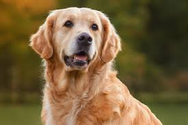
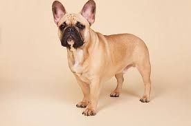
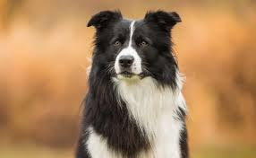
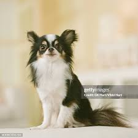

As raças mais vendidas no ano
Golden retriever
São cães de porte grande, calmos, dóceis, brincalhões, amigáveis, leais e muito apegados ao tutor. Estes animais requerem cuidados frequentes com a manutenção da pelagem. Se beneficiam da dieta com energia adaptada, além de nutrientes que suportem a integridade da barreira cutânea e a tonicidade cardíaca.
Bulldogue francês
Estes animais são divertidos, inteligentes, amigáveis, carismáticos, sociáveis e muito companheiros. Para o Bulldog Francês, é importante oferecer alimento de alta palatabilidade e digestibilidade, com croquetes adaptados à anatomia de sua mandíbula.
Border collie
A raça é originária da Grã-Bretanha. São animais muito elegantes, ágeis, ativos, vigorosos, inteligentes e obedientes. São mundialmente reconhecidos como cães de pastoreio e de atividades de agility.
Shih tzu
O Shih Tzu é um cão calmo, porém ativo, dócil, independente, alegre, curioso, divertido e sociável. A raça é ideal para companhia, especialmente para famílias com crianças.
Chihuahua
O Chihuahua, pequenino de origem mexicana, apresenta duas variações: pelo curto e pelo longo, sendo essa última a preferida pelos brasileiros, ocupando o sétimo lugar no ranking das raças de cães mais populares do Brasil.
Sobre Nós
Somos um site dedicado a trazer as curiosidades mais interessantes sobre o mundo atual. Nosso objetivo é manter você informado sobre temas diversos, explorando fatos fascinantes, inovações e descobertas que estão moldando a sociedade e o nosso cotidiano. Se você busca conhecimento e gosta de se surpreender com o que está acontecendo ao redor do mundo, aqui é o lugar certo para você.